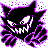
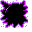

#093
Haunter
GhostPoison
Because of its ability to slip through block walls, it is said to be from an- other dimension
Base stats Total 350
HP45
Attack50
Defense45
Speed95
Special115
Details
- Species
- Gas
- Height
- 5'03"
- Weight
- 0.2 lb
- Catch rate
- 90
- Base exp
- 126
- Growth
- Medium Slow
Level-up moves
LevelMoveType
StartLickGhost
StartConfuse RayGhost
StartNight ShadeGhost
Lv 12LickGhost
Lv 20HypnosisPsychic
Lv 24Confuse RayGhost
Lv 34Shadow BallGhost
Lv 44Dream EaterPsychic
Where to find
TM / HM
TM06 ToxicTM07 Shadow BallTM21 Mega DrainTM24 ThunderboltTM25 ThunderTM29 PsychicTM31 MimicTM32 Double TeamTM34 BideTM35 MetronomeTM36 SelfdestructTM40 Sludge BombTM42 Dream EaterTM44 RestTM46 PsywaveTM47 ExplosionTM50 Substitute